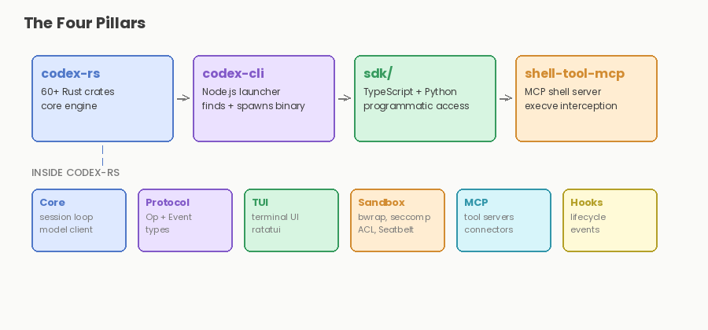
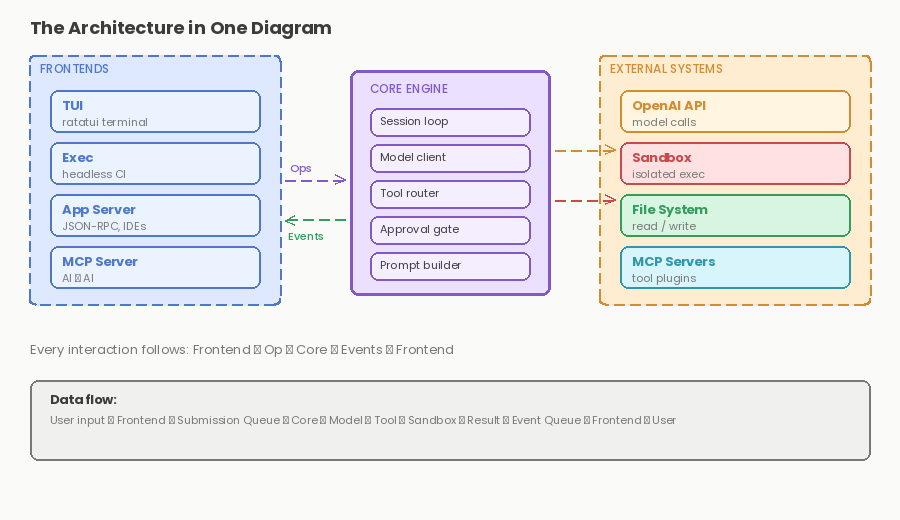

The 10,000-Foot View: What Is Codex CLI and Why Should You Care?
The Very Smart Intern in a Padded Room
Imagine you hire an incredibly talented software engineer. They understand every programming language. They can design systems, write tests, debug issues, and even explain their work. But there's one catch: they're not allowed to touch your computer directly. They work in a completely isolated sandbox. Everything they do is monitored, logged, and can be instantly reverted.
That's Codex CLI.
When you type a natural language prompt, "Add a login form to my Next.js app" or "Fix this memory leak in my Rust code", Codex CLI springs into action. It reads your files, reasons about your codebase, writes code, runs commands, edits files, tests changes, and iterates until the job is done. All while operating in a tightly controlled sandbox that prevents it from doing anything malicious or destructive.
But here's what makes it fascinating: Codex CLI is open-source. It's built from Rust, Node.js, TypeScript, and Python. Its architecture is modular, elegant, and carefully designed to run a sophisticated AI agent on your machine, without requiring cloud calls for every keystroke. This series will dissect that architecture piece by piece.
Today, we're starting with the bird's-eye view.
What Does Codex CLI Actually Do?
Let's demystify the black box with a concrete example.
You run this command:
codex "add a dark mode toggle to my React app"Behind the scenes, here's what happens:
- Understand the context. Codex reads your project structure, your package.json , your existing components, and any files you've explicitly shown it.
- Plan the work. The AI reasons about the changes needed: "I need to update the theme provider, add a toggle button, modify the CSS, and test the feature."
- Execute the plan. Codex writes code in temporary locations, runs your build system, tests the changes, and checks for errors.
- Refine and iterate. If tests fail, Codex sees the errors, understands what went wrong, and fixes it. This loop continues until everything works.
- Show you the results. You can see the final changes, review them, request adjustments, and merge them when you're satisfied.
All of this happens locally on your machine. No data is sent to the cloud except for the minimum necessary API calls to OpenAI's language models. Your proprietary code never leaves your computer.
Enter: The Four Buildings
Codex CLI isn't a monolith. It's a carefully orchestrated collection of modular components. We think of them as four architectural "buildings," each with a distinct purpose:

Building 1: The Rust Core (codex-rs)
The heart of everything. Think of this as the engine room of a ship.
Inside /codex-rs, you'll find 60+ Rust crates that handle:
- Core AI orchestration (codex-core): the brain that reasons about code and plans actions
- Terminal UI (codex-tui): the interactive interface where you type prompts and see results
- Sandboxing (linux-sandbox, process-hardening): the padlocked vault that keeps dangerous operations isolated
- Language tooling (lsp-bridge): understanding code structure via Language Server Protocol
- Secrets management (secrets): keeping API keys and credentials encrypted
- API communication (rmcp-client): talking to OpenAI's models
- And dozens more: handling everything from ANSI color codes to artifact management to package manager integration
Why Rust? Performance, safety, and control. The core needs to be blazingly fast and memory-safe. Rust forces you to think about resource ownership and thread safety at compile time. No garbage collection pauses, no surprise memory leaks. When you're sandboxing code execution, safety is non-negotiable.
Building 2: The CLI Launcher (codex-cli)
A thin shell. When you run codex in your terminal, you're invoking this Node.js layer.
Why not just run the Rust binary directly? This thin launcher handles:
- Platform-specific binary distribution (macOS arm64, Linux x86_64, etc.)
- Update checks ("Is there a newer version?")
- Shell integration and configuration file loading
- A smooth user experience before the Rust engine fully wakes up
It's small, fast, and does one job well: get out of the way and let the core do its thing.
Building 3: The SDK (sdk/)
This is where embedability lives. Inside /sdk, you'll find:
- TypeScript SDK: for integrating Codex into VS Code, Cursor, Windsurf, or any IDE
- Python SDK: for building custom agents and tools with Codex's architecture
- Python runtime: for safe Python code execution in the sandbox
The SDK abstracts the core's complexity behind clean, language-specific APIs. Want to build a Slack bot that uses Codex? Want to integrate code generation into your own CI/CD pipeline? The SDK is your friend.
Building 4: The MCP Server (shell-tool-mcp)
MCP stands for Model Context Protocol, OpenAI's standard for tools and resources.
This building exposes Codex's capabilities as a set of well-defined tools. It's how IDEs and other applications talk to the core. It's also a perfect example of scalable architecture: a single protocol, multiple clients, all sharing the same underlying engine.
The Architecture in One Diagram
Here's how these four buildings talk to each other:

Every frontend, whether it's the interactive terminal UI, a headless invocation, or an IDE plugin, connects to the same battle-tested core. The core orchestrates everything: file I/O, subprocess execution, API calls, and sandbox management.
The Queue That Powers Everything
If the core is the engine, the Submission Queue and Event Queue are the transmission.
Here's a simplified mental model:
- You type a prompt. It becomes a "submission", a request to Codex to do something.
- The submission enters the queue. The orchestrator breaks it into steps: "Parse the request, read the files, call the AI, execute the command, verify the results, ask for human input."
- Each step generates events. "File read complete," "API call succeeded," "Command output received," "User needs to approve changes."
- Events feed back into the system. The orchestrator consumes events, updates state, and decides on the next action.
This queue-based architecture is resilient. If something fails, Codex can see the failure event and decide whether to retry, ask for help, or escalate. If you interrupt a long-running operation, the queue cleanly stops processing new events.
We'll dive deep into this pattern in Article 2 when we discuss the Protocol.
Why This Matters
At this point, you might be thinking: "This is neat, but why should I care?"
Here's why:
For users: Codex CLI is fast, local, and safe. You're not uploading your codebase to a cloud service. You're not waiting for network latency on every keystroke. You're running a sophisticated AI agent on your own hardware, with full transparency into what it's doing.
For developers: The architecture is genuinely beautiful. It's modular (you can understand one building at a time), it's testable (each crate can be tested in isolation), and it's extensible (want to add a new frontend? Plug it into the core). If you want to understand how modern AI agents work—beyond the hype—Codex CLI is an excellent case study.
For the open-source community: This is a real, production-grade codebase that OpenAI is maintaining and evolving. It's not a toy or a proof-of-concept. The decisions made here—about safety, performance, and modularity—reflect hard-won lessons from running AI agents at scale.
The Puzzle Starts Here
You now have the map. You know the four buildings. You understand the three-layer model: frontends, core, and external systems.
But we've left several mysteries unsolved:
- What is the Protocol? How does the core actually communicate with all those frontends? What's the message format? (Hint: it's elegant and inspired by a specific standard.)
- How does sandboxing actually work? We've mentioned it a dozen times, but how do you actually prevent a subprocess from accessing the filesystem? What about on Windows vs. Linux vs. macOS?
- What's happening inside the AI orchestrator? How does Codex decide what action to take next? How does it handle ambiguity or conflicting goals?
- How do you handle context? Your codebase is huge, but you can't fit it all into the context window. How does Codex decide what to read and what to ignore?
- How does the queue work in practice? Let's trace a real submission from start to finish.
These questions are the spine of this series. In Article 2, we'll open up the Protocol layer and see how information flows. We'll trace a single prompt through the system and watch it transform into code.
Until Next Time
You're now equipped with the mental model you need. Codex CLI is four modular buildings sharing a common core, with a queue-based event system orchestrating the work. It's a deeply engineered system designed for safety, performance, and clarity.
In the next article, we'll get into the Protocol—the language that binds everything together. We'll see how a prompt becomes a series of discrete steps, and how each step feeds back into the system.
Originally published on LinkedIn.